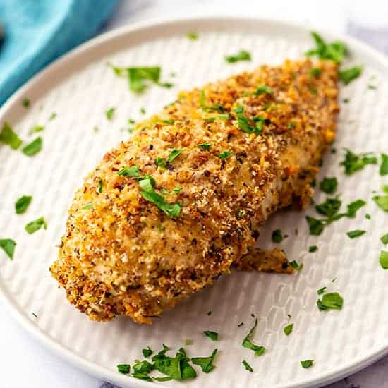

Mustard Crusted Chicken

Instructions
Wonderfully cooked chicken that comforts and pleases!
Ingredients
- 1lb chicken breast or cutlet (thin pieces preferred for frying)
- 2 cups of bread crumbs. Pre-made or fresh will do
- dijon mustard of choice
- 2 tablespoons of olive oil
Instructions
- Prepare your chicken on a cutting board. If you have thicker pieces, either flatten with a meat tenderizer or butterfly the chicken open.
Thinner pieces are ideal.
- Most breaded chicken recipes rely on flour & eggs to ensure a solid coating. This recipe does not! Have your 2 (or more) cups
of bread crumbs ready on a plate or dish.
- Using a brush or spoon, take plenty of dijon mustard and coat the prepared chicken in it. This will act as our "adhesive" for the bread crumbs.
Heat the 2 tablespoons of olive over medium heat in your frying pan.
- Place the chicken mustard side down in the bread crumbs and gently move around in the crumbs. While down, coat the bare side in dijon mustard.
Without flipping the chicken over, move bread crumbs onto the freshly coated side and cover evenly.
- Once your chicken is coated and the oil has been heated, gently move the chicken over to the pan.
The coating is delicate, so it is not an issue to have pieces flake off. Heat the chicken and aim for a golden brown texture on both sides.
(Be sure to cook both sides evenly!)
- Take off the heat when done and cut (cutting at a slight angle here adds to the presentation).
This recipe will be a hit if served with mashed potatoes, green beans with lemon and onion, or any other crisp & light veggie.